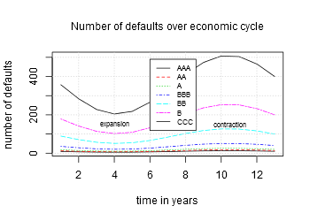
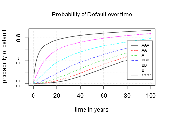

| CCRUNCHER |
Open-Source Tool for Credit Risk Modeling |
Technical Information

CCruncher is an open-source tool for estimating the loss distribution of a portfolio of loans to SMEs developed by Tatine. It is based on the Merton multi-factor model, a bottom-up approach to credit risk modeling widely used in the financial sector, either by in-house developments or by commercial products such as CreditMetrics [1] or KMV [2].
The complete solution consists of two parts. The first part models the joint distribution of the default times of multiple obligors and estimates its parameters using the historical records of observed defaults. The second part computes the portfolio loss distribution based on the simulation of default times using the Monte Carlo method. The credit risk is estimated computing VaR or ES or another statistic to the simulated loss values. Note that CCruncher only covers the second part.
The advantages of the complete solution are: 1) it avoids over-simplifications that can be dangerous [7] (eg. limiting the number of factors, or assuming infinite number of obligors, or assuming homogeneous portfolios), 2) correlation is considered suitably, 3) asset exposures/recoveries can vary over time, 4) it can be considered the uncertainty of the parameters in the credit risk assessment, and 5) the ability to disaggregate the risk.
Assumptions
1. Every obligor has assigned a probability of default (PD) expressed as a rating. Usually the evolution of this probability over time is given by the transition matrix.
2. The correlation between obligors depends only on the economic sectors to which they belong. In particular, correlations don't depend on the rating of obligors or the number of obligors in each sector.
3. The correlations are constant over time. This means that the PD is affected by the economic cycle, more in detail, the transition matrix. See figure.
Probability of Default

To assess the credit risk it is necessary to have the probability of default (PD) of each obligor over time (see figure). The transition matrix is one way to obtain the PD for each rating. This matrix indicates the probability of moving from one rating to another in a fixed time horizon (ie. one year). The connection between the PD at time t of an obligor who currently has a rating r, Fr(t), and the transition matrix at horizon T, MT, is given by the following formula:
Fr(t) = Mt(r,n)
where r is the rating, t is the time, Mt is the transition matrix at horizon t (scaled from MT), and n is the index of the rating 'defaulted'. The transition matrix can be scaled in time by using the following rules:
If the transition matrix isn't a regular Markov matrix, then it may occur that the scaled transition matrix has some invalid values (eg. probability values out of range [0,1]). In these cases CCruncher regularize the original transition matrix using the QOM algorithm (Quasi-Optimization of the root Matrix) [6].
Multivariate Default Times
The multivariate default times model can be seen both as a copula-type model as a model of multi-factor type. Both forms are equivalent. The copula type approach allows formulating the problem in all its generality. The multi-factor type approach allows interpreting and estimating the parameters, and provides an efficient algorithm to perform the Monte Carlo simulation.
Copula model
The model described in this section is the same as described in [3] [4] [5]. It is assumed that the default times of the obligors, Ti, are modeled by a multivariate distribution T=(T1,…,Tn) such that:
F(t1,…,tn) = Pr{T1< t1,…,Tn< tn}
Sklar's theorem applied to multivariate distribution T gives:
F(t1,…,tn) = C(F1(t1), …, Fn(tn))
where F1,…,Fn are the marginals of F and C is the copula [8] that contains the dependence structure between obligors. The univariate distribution Fi(t) = Pr{Ti < t} is the PD over time of the i-th obligor and is fully determined by its rating. CCruncher assumes that the copula C is a t-Student copula by the following reasons: 1) it is completely determined by the correlation (because it is an elliptical copula), 2) it supports a wide range dependence structures changing the degrees of freedom, ν, 3) if ν ≠ ∞ then it has tail dependence, 4) it is a symmetric copula (because it is an elliptical copula), allowing to apply the antithetic variance reduction method, and 5) it can be expressed as a multi-factor model.
Proposition (characterization of the default times). Let T=(T1,…,Tn) the joint distribution of default times with t-Student copula C=(U1,…,Un) and marginals Fi, and X=(X1,…,Xn) a multivariate t-Student distribution with the same R and ν than C. Then,
P{Ti ≤ t} = P{Xi ≤ tν-1(Fi(t))}
where tν-1 is the inverse of the univariate t-Student distribution with ν degrees of freedom. This result is widely used both in the parameters estimation as the simulation of the default times. In the following section we see that this copula model can be interpreted as a t-Student multi-factor model.
Multi-factor model
It is proved, under very general conditions, that any multivariate t-Student distribution with a correlation matrix composed of blocks can be expressed by a multi-factor model like:
where S, Z and εij are latent variables, k is the number of factors/sectors, ni is the number of obligors in the sector i, wi are the factor loadings of factor i, and R is the correlation matrix between factors. The correlation between two obligors in the gaussian case, ν=∞, is:
The combination of the characterization of the default times as a multivariate t-Student distribution and the interpretation of this as a multi-factor model lead to the multi-factor Merton model. This considers that a default occurs if the marginal distribution, the default time in our case, falls below a certain level.
The estimation of the model parameters (ν, wi, R) is outside the scope of this document. See [1] [2] [9] [10] for additional information.
Portfolio Loss Distribution
We define the portfolio loss distribution at time t, Lt, from the multivariate distribution of default times, T, as:
Lt = ∑ 1(Ti < t)·(1-Recoveryi(Ti))·Exposurei(Ti)
We use the Monte Carlo method to estimate the portfolio loss distribution simulating the default times of obligors. The loss is computed using the following formulas:
Algorithm (default times simulation). We use the characterization of the default times to simulate the T distribution from their marginals F1,...,Fn and the t-Student copula with ν degrees of freedom and correlation matrix R:
- Simulate a t-Student copula with ν degrees of freedom and correlation R -see below-: (u1,…,un)
- Apply the inverse sampling method to obtain the default times: (F1-1(u1),…, Fn-1(un))
Algorithm (t-Student copula simulation). We combine the t-Student multi-factor formulation and the standard gaussian simulation algorithm:
- Obtain the Cholesky decomposition, L, of R
- Simulate k independent random variates v1,…,vk from N(0,1)
- Let z = L·v
- Simulate n independent random variates εij from N(0,1)
- Let yij = wi·zi+√(1- wi2)·εij
- Simulate a random variate s from χν2
- Set xij = √(ν/s)·yij
- Set uij = tν(xij)
Credit Risk Analysis
After N Monte Carlo simulations (eg. 20000 500000 or more) we have a sampling of the portfolio loss distribution, x1,…xN. We call xk:N the k-th value of the sorted list of values. We can estimate the credit risk using the following statistics:
The accuracy of these statistics can be estimated using the sampling variance formulas when available or by resampling methods when not.
References
- Greg M. Gupton, Christopher C. Finger, Mickey Bhatia (1997). CreditMetrics - Technical Document. J.P. Morgan & Co. Incorporated.
- Peter Crosbie (2003). Modeling default risk. Moody’s KMV Company
- David X. Li. (2000). On Default Correlation: A Copula Function Approach. Journal of Fixed Income 9 (4): 43–54.
- Bluhm, C., Overbeck, L., Wagner, C. (2003). An Introduction to Credit Risk Modeling. Chapman & Hall/CRC Financial Mathematics Series; 2nd Reprint; CRC Press
- Rüdiger Frey, Alexander J. McNeil, Mark A. Nyfeler (2001). Copulas and credit models. RISK, October 2001: pages 111-114.
- Alexander Kreinin and Marina Sidelnikova (2001). Regularization algorithms for transition matrices. Algo Research Quarterly, Vol. 4, Nos. 1/2.
- Long, Kete (2011). The Fallacy of an Overly Simplified Asymptotic Single-risk-factor Model. Journal of Risk Model Validation, Vol. 5, No. 4, (Winter 2011/12), pp. 27-48.
- Embrechts P, McNeil A, Straumann D (2003). Correlation and dependence in risk management: properties and pitfalls. Risk Management: Value at Risk and Beyond, ed. M.A.H. Dempster, Cambridge University Press, Cambridge, pp. 176-223
- Michael Gordy, Erik Heitfield (2002). Estimating Default Correlations from Short Panels of Credit Rating Performance Data. Working paper.
- Christoff Gössl (2005). Predictions based on certain uncertainties - a Bayesian credit portfolio approach.